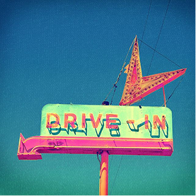
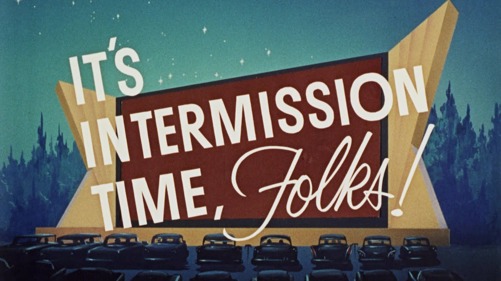
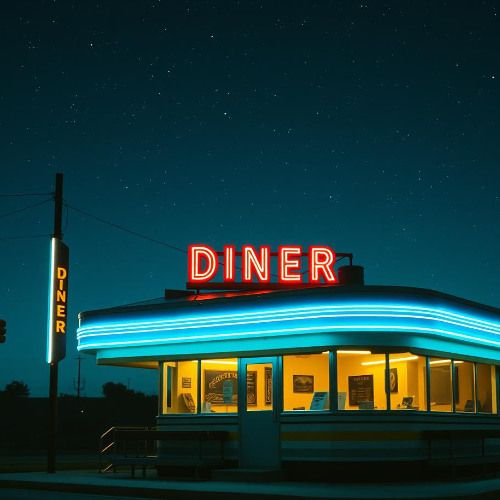
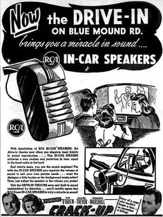
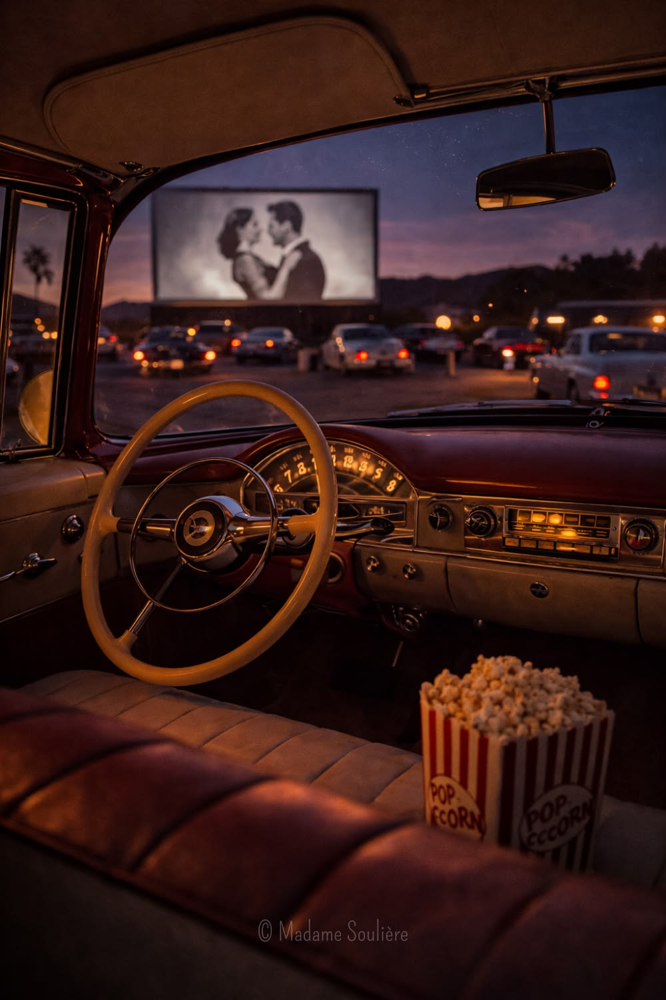
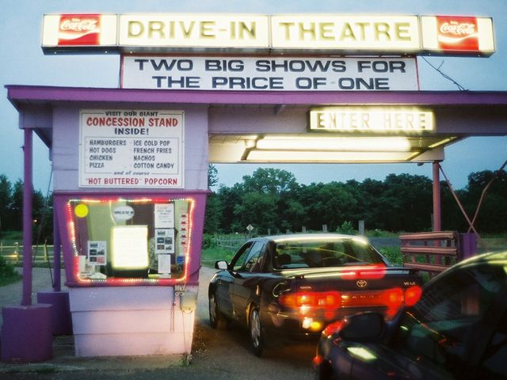
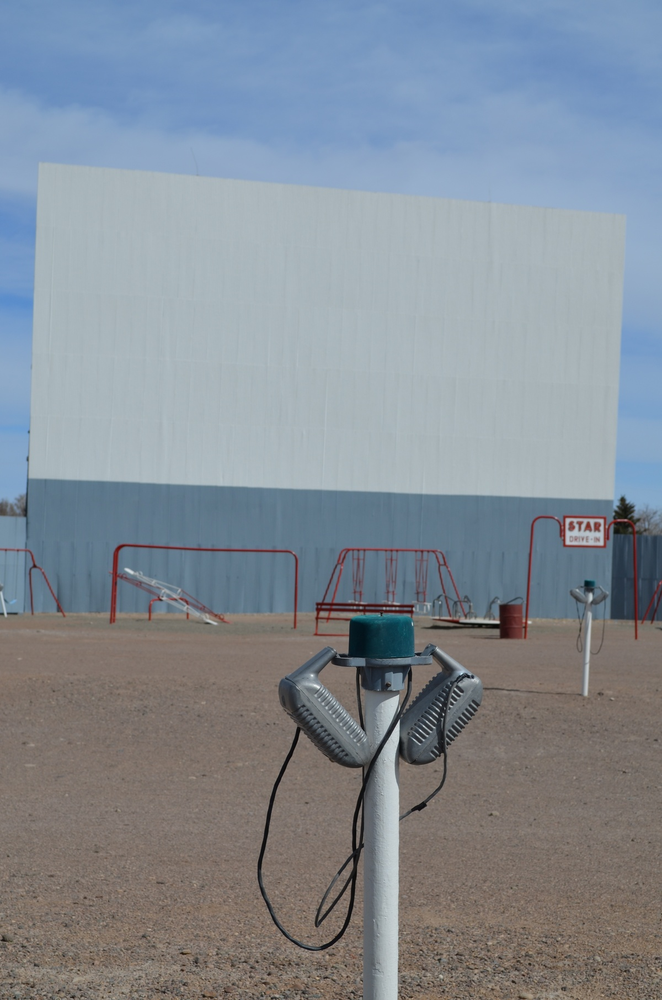

The RETRO
Drive-In Movie Theater
Reconnect with the past,
parked under the stars.
About
At The RETRO Drive-In Theater, we bring the magic of movies back to life in a way that feels both timeless and new. Our theater blends the charm of classic drive-in experiences with the excitement of modern film, creating a space where everyone can reconnect with the joy of cinema.
Featuring two large outdoor screens, The RETRO offers a variety of movie showings that range from beloved classics to today’s biggest hits. Guests can enjoy the show from the comfort of their car, grab quick snacks and drinks from our concession stand, or sit down in our on-site restaurant for a more relaxed dining experience while the movie plays.
We go beyond traditional movie nights by hosting themed events such as classic film nights, family nights, and horror nights. These special events create a fun and unique atmosphere that keeps every visit fresh and memorable. The RETRO is also the perfect place to celebrate special occasions, with screen rentals available for birthdays, parties, reunions, and more.
Our goal is simple. We want to create a welcoming place where people can gather, unwind, and make lasting memories under the stars. Whether you are here for a nostalgic night out or a new kind of movie experience, The RETRO Drive-In Theater is where stories come to life.

Services Offered
Watch
Experience movies the way they were meant to be seen. From timeless classics to today’s biggest hits, our dual big screens bring stories to life under the open sky.
Experience
Join us for themed nights and special events like classic film nights, family nights, and horror features. Every visit offers something a little different.
Connect
The RETRO is more than a movie theater. It is a place to gather, laugh, and make memories with friends, family, and the community.
Eat
Enjoy all your favorite movie treats at our concession stand, or take it a step further with our on-site restaurant where you can sit back, relax, and dine while the film plays.
Celebrate
Make your special moments unforgettable. Rent one of our big screens for birthdays, parties, reunions, and private events with a unique cinematic twist.
Hours of Operations
The RETRO Drive-In Theater is open seasonally, with hours designed to give guests the best possible evening experience.
Monday - Thursday: 6:00 PM - 12:30AM
Friday - Sunday: 5:30 PM - 2 AM
Gates open one hour before the first showing to allow guests time to park, grab food, and get settled. Movie showtimes begin at dusk.
Hours may vary for special events, holidays, or private rentals. For the most up-to-date schedule and showtimes, please check our website or contact us directly.
Gallery





